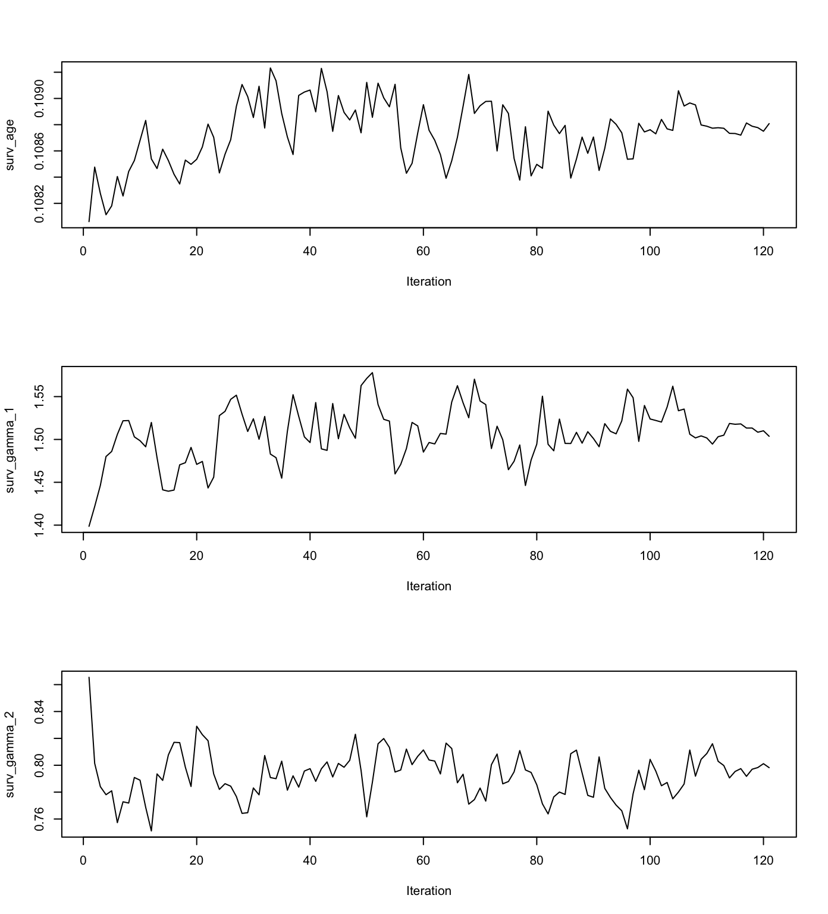
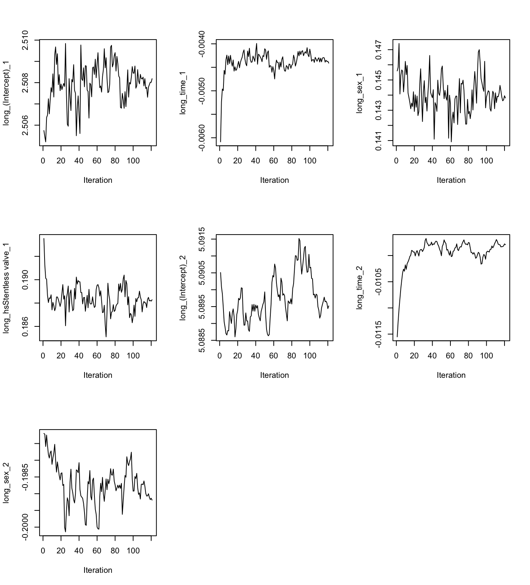

The joineRML package implements methods for analyzing data from multiple longitudinal studies in which the responses from each subject consists of time-sequences of repeated measurements and a possibly censored time-to-event outcome. The modelling framework for the repeated measurements is the multivariate linear mixed effects model. The model for the time-to-event outcome is a Cox proportional hazards model with log-Gaussian frailty. Stochastic dependence is captured by allowing the Gaussian random effects of the linear model to be correlated with the frailty term of the Cox proportional hazards model. For full details of the model, please consult the technical vignette by running
vignette("technical", package = "joineRML")Heart valve data
Data
The simplest way to explain the concepts of the package is through an example. joineRML comes with the data set heart.valve. Details of this data can be found in the help file by running the command
help("heart.valve", package = "joineRML")This data is in so-called long or unbalanced format:
library("joineRML")
data("heart.valve")
head(heart.valve)
## num sex age time fuyrs status grad log.grad lvmi log.lvmi
## 1 1 0 75.06027 0.0109589 4.956164 0 10 2.302585 118.98 4.778955
## 2 1 0 75.06027 3.6794520 4.956164 0 10 2.302585 118.98 4.778955
## 3 1 0 75.06027 4.6958900 4.956164 0 10 2.302585 137.63 4.924569
## 4 2 0 45.79452 6.3643840 9.663014 0 14 2.639057 114.93 4.744323
## 5 2 0 45.79452 7.3041100 9.663014 0 9 2.197225 109.80 4.698661
## 6 2 0 45.79452 8.3013700 9.663014 0 12 2.484907 157.40 5.058790
## ef bsa lvh prenyha redo size con.cabg creat dm acei lv emergenc hc
## 1 93 1.77 1 3 0 27 1 103 0 1 1 0 0
## 2 93 1.77 1 3 0 27 1 103 0 1 1 0 0
## 3 93 1.77 1 3 0 27 1 103 0 1 1 0 0
## 4 68 1.92 1 1 1 22 0 76 0 0 2 0 0
## 5 70 1.92 1 1 1 22 0 76 0 0 2 0 0
## 6 56 1.92 1 1 1 22 0 76 0 0 2 0 0
## sten.reg.mix hs
## 1 1 Stentless valve
## 2 1 Stentless valve
## 3 1 Stentless valve
## 4 1 Homograft
## 5 1 Homograft
## 6 1 HomograftThe data refer to 256 patients and are stored in the unbalanced format, which is convenient here because measurement times were unique to each subject. The data are stored as a single R object, heart.valve, which is a data frame of dimension 988 by 25. The average number of repeated measurements per subject is therefore 988/256 = 3.86. As with any unbalanced data set, values of time-constant variables are repeated over all rows that refer to the same subject. The dimensionality of the data set can be confirmed by a call to the dim() function, whilst the names of the 25 variables can be listed by a call to the names() function:
dim(heart.valve)
## [1] 988 25
names(heart.valve)
## [1] "num" "sex" "age" "time"
## [5] "fuyrs" "status" "grad" "log.grad"
## [9] "lvmi" "log.lvmi" "ef" "bsa"
## [13] "lvh" "prenyha" "redo" "size"
## [17] "con.cabg" "creat" "dm" "acei"
## [21] "lv" "emergenc" "hc" "sten.reg.mix"
## [25] "hs"We will only analyse a subset of this data, namely records with case-complete data for heart valve gradient (grad) and left ventricular mass index (lvmi):
hvd <- heart.valve[!is.na(heart.valve$grad) & !is.na(heart.valve$lvmi), ]Model fitting
The main function in the joineRML package is the mjoint() function. Its main (required) arguments are:
formLongFixed: a list (of length equal to the number of longitudinal outcome types considered) of two-sided formulae specifying the response on the left-hand side and the mean linear predictor terms for the fixed effects in the linear mixed models on the right-hand side.formLongRandom: a list (of same length asformLongFixed) of one-sided formulae specifying the model for random effects in the linear mixed models.formSurv: a formula specifying the proportional hazards regression model for the time-to-event outcome in the same structure as forsurvival::coxph.data: a list (of same length asformLongFixed) of data.frames; one for each longitudinal outcome. It is assumed that the event time data is in the first data.frame (i.e.data[[1]]), unless the argumentsurvData(which defaults toNULL) is specified. If \(K>1\) and the data are balanced within patients (i.e. multiple markers measured at common measurement times), then one can specifydataas a data frame rather than as a list.timeVar: the column name indicating the time variable in the linear mixed effects model. If \(K>1\) and the data frames have different column names for time, thentimeVarcan alternatively be specified as a vector of strings of length \(K\).
We can fit a bivariate joint model to the log-transformed valve gradient and LVMI indices in the hvd subset using
set.seed(12345)
fit <- mjoint(
formLongFixed = list("grad" = log.grad ~ time + sex + hs,
"lvmi" = log.lvmi ~ time + sex),
formLongRandom = list("grad" = ~ 1 | num,
"lvmi" = ~ time | num),
formSurv = Surv(fuyrs, status) ~ age,
data = list(hvd, hvd),
timeVar = "time")
## Running multivariate LMM EM algorithm to establish initial parameters...
## Finished multivariate LMM EM algorithm...
## EM algorithm has converged!
## Estimating posterior random effects...
## Estimating approximate standard errors...Details on the model estimation algorithm are provided in the technical details vignette. We note here that this is not necessarily the most appropriate model for the data, and is included only for the purposes of demonstration. There are a number of other useful arguments in the mjoint function; for example, inits for specifying (partial) initial values, control for controlling the optimization algorithm, and verbose for monitoring the convergence output in real-time. A full list of all arguments with explanation are given in the help documentation, accessed by running help("mjoint").
Post-fit analysis
Once we have a fitted mjoint object, we can begin to extract relevant information from it. Most summary statistics are available from the summary function:
summary(fit)
##
## Call:
## mjoint(formLongFixed = list(grad = log.grad ~ time + sex + hs,
## lvmi = log.lvmi ~ time + sex), formLongRandom = list(grad = ~1 |
## num, lvmi = ~time | num), formSurv = Surv(fuyrs, status) ~
## age, data = list(hvd, hvd), timeVar = "time")
##
## Data Descriptives:
##
## Event Process
## Number of subjects: 221
## Number of events: 47 (21.3%)
##
## Longitudinal Process
## Number of longitudinal outcomes: K = 2
## Number of observations:
## Outcome 1 (grad): n = 629
## Outcome 2 (lvmi): n = 629
##
## Joint Model Summary:
##
## Longitudinal Process: Multivariate linear mixed-effects model
## log.grad ~ time + sex + hs, random = ~1 | num
## log.lvmi ~ time + sex, random = ~time | num
## Event Process: Cox proportional hazards model
## Surv(fuyrs, status) ~ age
## Model fit statistics:
## log.Lik AIC BIC
## -991.1275 2018.255 2079.422
##
## Variance Components:
##
## Random effects variance covariance matrix
## (Intercept)_1 (Intercept)_2 time_2
## (Intercept)_1 0.1056400 0.0190870 0.0037087
## (Intercept)_2 0.0190870 0.1189100 -0.0062859
## time_2 0.0037087 -0.0062859 0.0024650
## Standard Deviations: 0.32502 0.34484 0.049649
##
## Residual standard errors:
## sigma2_1 sigma2_2
## 0.5962153 0.1926125
##
## Coefficient Estimates:
##
## Longitudinal sub-model:
## Value Std.Err z-value p-value
## (Intercept)_1 2.5082 0.0642 39.0447 <0.0001
## time_1 -0.0044 0.0134 -0.3299 0.7415
## sex_1 0.1438 0.0769 1.8693 0.0616
## hsStentless valve_1 0.1883 0.0744 2.5319 0.0113
## (Intercept)_2 5.0895 0.0338 150.4384 <0.0001
## time_2 -0.0098 0.0068 -1.4390 0.1501
## sex_2 -0.1992 0.0550 -3.6228 0.0003
##
## Time-to-event sub-model:
## Value Std.Err z-value p-value
## age 0.1088 0.0160 6.7961 <0.0001
## gamma_1 1.5037 0.9032 1.6648 0.0959
## gamma_2 0.7982 0.6464 1.2349 0.2169
##
## Algorithm Summary:
## EM algorithm computational time: 40.5 secs
## Convergence status: converged
## Convergence criterion: sas
## Final Monte Carlo sample size: 3122
## Standard errors calculated using method: approxOne can also extract the coefficients, fixed effects, and random effects using standard generic functions:
coef(fit)
## $D
## (Intercept)_1 (Intercept)_2 time_2
## (Intercept)_1 0.105639552 0.019086970 0.003708682
## (Intercept)_2 0.019086970 0.118912598 -0.006285853
## time_2 0.003708682 -0.006285853 0.002465011
##
## $beta
## (Intercept)_1 time_1 sex_1
## 2.508185353 -0.004409933 0.143812047
## hsStentless valve_1 (Intercept)_2 time_2
## 0.188281478 5.089519841 -0.009792227
## sex_2
## -0.199191133
##
## $sigma2
## sigma2_1 sigma2_2
## 0.35547268 0.03709956
##
## $haz
## [1] 0.001870309 0.001877913 0.002021459 0.002229120 0.002264267
## [6] 0.002340948 0.002397806 0.002401283 0.002438790 0.002454874
## [11] 0.002469187 0.002679255 0.002734533 0.002793430 0.002813763
## [16] 0.002848816 0.002899155 0.003034978 0.003167093 0.003374304
## [21] 0.003658375 0.007662982 0.004258645 0.004477425 0.004581532
## [26] 0.004773790 0.005186524 0.005315634 0.006235573 0.006769618
## [31] 0.006938246 0.007149842 0.007263083 0.007858815 0.008529241
## [36] 0.008891707 0.009245827 0.010046153 0.011935513 0.012311538
## [41] 0.013650072 0.016515164 0.017034515 0.046490600 0.048639295
## [46] 0.247497975
##
## $gamma
## age gamma_1 gamma_2
## 0.1088081 1.5036984 0.7982243
fixef(fit, process = "Longitudinal")
## (Intercept)_1 time_1 sex_1
## 2.508185353 -0.004409933 0.143812047
## hsStentless valve_1 (Intercept)_2 time_2
## 0.188281478 5.089519841 -0.009792227
## sex_2
## -0.199191133
fixef(fit, process = "Event")
## age gamma_1 gamma_2
## 0.1088081 1.5036984 0.7982243
head(ranef(fit))
## (Intercept)_1 (Intercept)_2 time_2
## 1 -0.20278045 -0.244812178 0.010415077
## 2 -0.04343910 -0.176953314 0.001840393
## 3 -0.01719138 0.006568905 0.010527853
## 4 -0.42634195 -0.596150071 0.012342804
## 5 -0.05144389 0.078210355 0.021558164
## 6 0.23251670 0.229308158 0.005302997Although a model fit may indicate convergence, it is generally a good idea to examine the convergence plots. These can be viewed using the plot function for each group of model parameters.
plot(fit, params = "gamma")
plot(fit, params = "beta")
Bootstrap standard errors
Once an mjoint model has converged, and assuming the se.approx argument is TRUE (default), then approximated standard errors are calculated based on the empirical information matrix of the profile likelihood at the maximizer. Theoretically, these standard errors will be underestimated (see the technical vignette). In principle, residual Monte Carlo error will oppose this through an increase in uncertainty.
fit.se <- bootSE(fit, nboot = 100)Bootstrapping is a computationally intensive method, possibly taking many hours to fit. For this reason, the bootSE function makes use of the use.mle argument, which automatically initializes each model fit to the maximizer of the fitted model, fit. Also, one might relax the control parameter constraints on the optimization algorithm for each bootstrap model; however, this will be at the expense of inflated standard errors due to Monte Carlo error.
Once we run bootSE, we can call the object to interrogate it
fit.seor alternatively re-run the summary command, passing the additional argument of bootSE = fit.se
summary(fit, bootSE = fit.se)